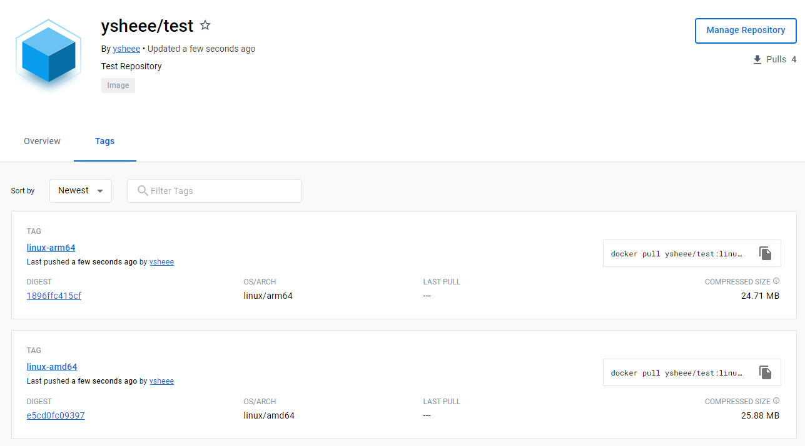
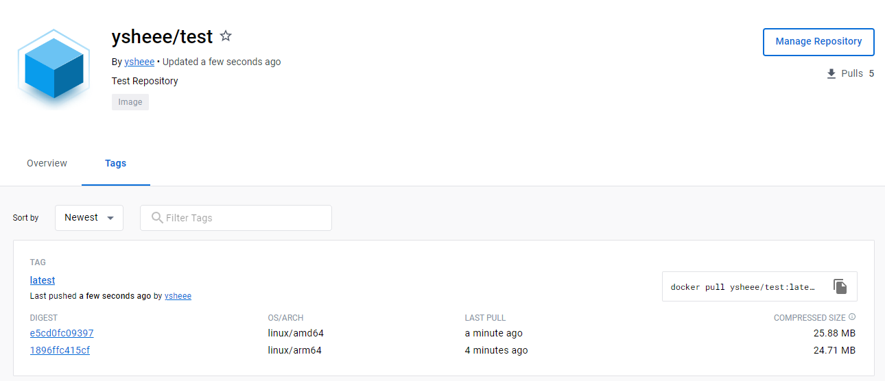

Multi Architecture Image¶
:서로 다른 OS 및 Architecture에 따라 그 변형을 결합할 수 있는 컨테이너 이미지 유형
:Multi Architecture Build의 경우, Container Client는 OS 및 Architecture와 일치하는 이미지를 자동으로 선택한다.
따라서, 이미지를 여러 환경에서 실행할 수 있도록 Multi-Architecture Image로 구성해야 한다.
 manifest 명령이 잘 실행된다면, manifest를 생성함으로써 Multi-Architecture Image를 도커 허브로 push할 수 있다.
manifest 명령이 잘 실행된다면, manifest를 생성함으로써 Multi-Architecture Image를 도커 허브로 push할 수 있다.
다음과 같은 간단한 소스코드를 <arm>에서 이미지로 빌드했을 때
- 당연하게도, 해당 환경에서는 컨테이너 실행이 가능하다. - 그러나 다른 환경에서는 실행이 불가능한데, 이는 이미지가 'ARM architecture' 이미지이기 때문이다.# amd에서 실행할 시, 다음과 같은 오류를 출력한다.
WARNING: The requested image's platform (linux/arm64/v8) does not match the detected host platform (linux/amd64) and no specific platform was requested
exec /bin/bash: exec format error
Tip
다음 명령어를 통해서도 해당 이미지가 'ARM architecture'임을 알 수 있다.
docker image inspect image_name -f '{{.Os}}/{{.Architecture}}'
Manifest + DockerHub¶
- Manifest : layer, size, digest 등의 이미지 정보. 이를 통해 이미지를 고유하게 식별한다.
- Manifest list : 하나 이상의 이미지 이름을 지정하여 생성되는 이미지 레이어 목록.
Manifest는 아직 Experimental Features이므로 config.json에 다음 내용을 추가한다.
manifest 명령이 실행 되는지 확인docker manifest inspect를 통해 해당 이미지의 OS, Architecture, size, digest 등 세부정보를 확인할 수 있다.
manifest 명령이 잘 실행된다면, manifest를 생성함으로써 Multi-Architecture Image를 도커 허브로 push할 수 있다.
① Image
build and push
# Image build
docker build -t ysheee/test:linux-arm64 --platform linux/arm64 .
docker build -t ysheee/test:linux-amd64 --platform linux/amd64 .
# 해당 태그를 가진 이미지 모두 push
docker push ysheee/test -a

② Create manifest and push
# Create manifest
# docker manifest create {manifest_name} {image_name} {image_name}
docker manifest create ysheee/test ysheee/test:linux-arm64 ysheee/test:linux-amd64
# push manifest
# docker manifest push {manifest_name}
docker manifest push ysheee/test

이제, 해당 이미지를 다시 amd 환경에서 실행시켜보면 잘 돌아가는 것을 확인할 수 있다.
BuildX¶
:확장된 빌드 기능이 포함된 Docker CLI plugin
① docker buildx 실행 확인
② Builder Instance 생성 및 사용 설정--name: builder 이름 --driver BuildX-Driver
* docker-container: docker를 통해 생성된 buildkit container 사용 (default)
* remote
* kubernetes
Back to top